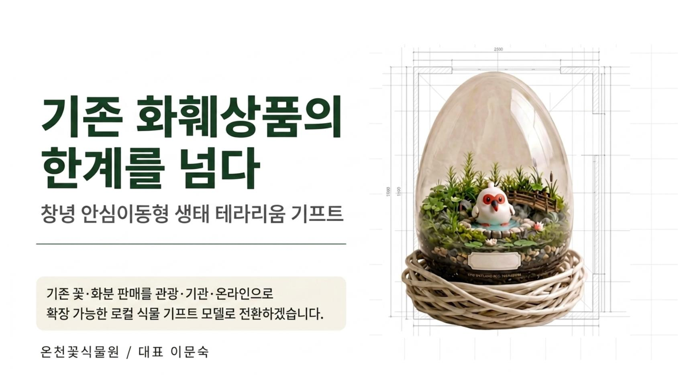

🌱 따오 발표 연습기 (최종 통합본)
스톱워치 기록 | 로컬스토리지 유지 | PC/모바일 뷰 완벽 분리 | 압박면접 특화
발표 10분
연습
일반 Q&A
연습
압박 심사위원
모드
보기:
자동
컴퓨터 가로형
모바일 세로형
슬라이드: 1 / 12
타이머:
00:00
▶
⏸
💾
초기화
녹 음:
🔴 시작
⏹ 정지
00:00
(0분 00초 녹음)
⏱ 과거 기록 (자동 저장)
삭제
기록이 없습니다.

◀ 이전
1 / 12
다음 ▶
[1번 슬라이드]
속도
1.0배
🔊 읽기
⏹
프롬프터
5
▶
⏸
⏮
🔊 질문 듣기
대기 중
질문 대기
아래 버튼을 눌러 질문을 뽑아주세요.
💡 모범 답변 보기
🔄 다음 랜덤 질문
🔁 초기화
🔥 압박 모드:
약점을 파고드는 핵심 '공격형' 질문만 출제되며, 질문을 뽑으면 자동으로 음성이 재생됩니다.
🔊 다시 듣기
대기 중
압박 대기
아래 버튼을 눌러 질문을 뽑아주세요.
💡 방어 논리 보기
🔥 다음 압박 질문
🔁 초기화